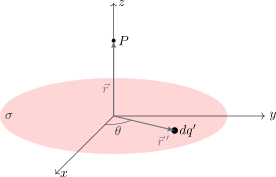

Disco Cargado Uniformemente#
Ahora que hemos resuelto el campo eléctrico de un anillo, podemos utilizar ese resultado como un “bloque de construcción” para resolver geometrías bidimensionales más complejas.
Imagina un disco circular de radio \(R\) con una densidad de carga superficial uniforme \(\sigma\). Queremos encontrar el campo eléctrico en un punto \(P\) sobre su eje central (eje \(z\)), a una distancia \(z\) del centro.
{kind=link}

1. El Disco como una Suma de Anillos#
En lugar de dividir el disco en cargas puntuales infinitesimales (\(dq' = \sigma dA\)), lo dividiremos en una serie de anillos concéntricos de radio \(r\) y grosor infinitesimal \(dr\).
Área del anillo diferencial: Si “desenrollamos” este anillo muy delgado, forma un rectángulo de longitud \(2\pi r\) y altura \(dr\). Su área es \(dA = 2\pi r dr\).
Carga del diferencial: Usando la densidad superficial (\(\sigma = dq'/dA\)), la carga de este anillo infinitesimal es: $\(dq' = \sigma (2\pi r dr)\)$
2. Uso del Resultado Previo#
En el apartado anterior, demostramos que el campo en el eje de un anillo de radio \(R\) y carga \(Q\) es: $\(E_{anillo} = \frac{1}{4\pi\epsilon_0} \frac{Q z}{(R^2 + z^2)^{3/2}}\)$
Para nuestro disco, cada anillo diferencial de radio \(r\) y carga \(dq'\) produce un “campo diferencial” \(dE_z\) en el punto \(P\). Simplemente adaptamos la fórmula del anillo: $\(dE_z = \frac{1}{4\pi\epsilon_0} \frac{z \, dq'}{(r^2 + z^2)^{3/2}}\)$
Sustituyendo \(dq'\): $\(dE_z = \frac{1}{4\pi\epsilon_0} \frac{z (\sigma 2\pi r dr)}{(r^2 + z^2)^{3/2}}\)$
Simplificando constantes (\(2\pi\) se cancela con parte del \(4\pi\)): $\(dE_z = \frac{\sigma z}{2\epsilon_0} \frac{r}{(r^2 + z^2)^{3/2}} dr\)$
3. Integración sobre el Disco#
Para obtener el campo total, sumamos (integramos) las contribuciones de todos los anillos concéntricos, desde el centro del disco (\(r = 0\)) hasta su borde exterior (\(r = R\)):
Para resolver esta integral, utilizamos la sustitución \(u = r^2 + z^2\), lo que implica \(du = 2r dr\), o bien \(\frac{du}{2} = r dr\).
La integral se transforma en: $\(\int u^{-3/2} \left(\frac{du}{2}\right) = -u^{-1/2} = \frac{-1}{\sqrt{r^2 + z^2}}\)$
Evaluando entre los límites \(0\) y \(R\): $\(\left[ \frac{-1}{\sqrt{r^2 + z^2}} \right]_{0}^{R} = \left( \frac{-1}{\sqrt{R^2 + z^2}} \right) - \left( \frac{-1}{\sqrt{0^2 + z^2}} \right)\)$
Asumiendo que \(P\) está en el lado positivo del eje (\(z > 0\)), \(\sqrt{z^2} = z\). Nos queda: $\(\frac{1}{z} - \frac{1}{\sqrt{R^2 + z^2}}\)$
4. Resultado Final#
Multiplicando este resultado por las constantes que sacamos de la integral (\(\frac{\sigma z}{2\epsilon_0}\)), obtenemos la expresión final:
Distribuyendo la \(z\) hacia adentro del paréntesis:
🔍 Análisis Físico: El Plano Infinito#
La física real se esconde en los casos límite. ¿Qué pasa si el punto \(P\) está muy cerca del disco, o equivalentemente, si el disco es inmensamente grande (\(R \to \infty\))?
Si \(R\) es infinitamente grande, el término \(\frac{z}{\sqrt{R^2 + z^2}}\) tiende a cero. La ecuación colapsa a:
¡Sorpresa! El campo eléctrico se vuelve constante e independiente de la distancia \(z\). Este es el célebre resultado para un Plano Infinito de Carga, un concepto fundamental que pronto demostraremos de forma mucho más rápida utilizando la Ley de Gauss.
Show code cell source
from IPython.display import display, HTML
simulacion_disco_3d_html = """
<div style="border: 1px solid #e0e0e0; padding: 20px; border-radius: 8px; background-color: #f8f9fa; font-family: -apple-system, BlinkMacSystemFont, 'Segoe UI', Roboto, Arial, sans-serif;">
<h3 style="margin-top:0; color: #2c3e50;">Simulación 3D: Integración del Campo de un Disco</h3>
<p style="font-size: 0.9em; color: #555; margin-bottom: 15px;">El disco se modela como una sumatoria infinita de anillos concéntricos. Mueve el "Anillo dx'" para ver cómo cada uno aporta al campo total.</p>
<div style="display: flex; gap: 20px; flex-wrap: wrap; margin-bottom: 15px;">
<div style="flex: 1; min-width: 220px;">
<div style="margin-bottom: 8px;">
<label style="font-weight: 600; display: inline-block; width: 140px;">Posición P (Eje Z): <span id="disk_val_z" style="font-weight: normal;">2.0</span></label>
<input type="range" id="disk_slider_z" min="-5" max="5" step="0.1" value="2.0" style="width: 40%; vertical-align: middle;">
</div>
<div>
<label style="font-weight: 600; display: inline-block; width: 140px; color: #0056b3;">Rotar Cámara: <span id="disk_val_cam" style="font-weight: normal;">45°</span></label>
<input type="range" id="disk_slider_cam" min="0" max="360" step="1" value="45" style="width: 40%; vertical-align: middle;">
</div>
</div>
<div style="flex: 1; min-width: 220px;">
<div style="margin-bottom: 8px;">
<label style="font-weight: 600; display: inline-block; width: 130px;">Nº de Anillos: <span id="disk_val_n" style="font-weight: normal;">20</span></label>
<input type="range" id="disk_slider_n" min="5" max="50" step="1" value="20" style="width: 40%; vertical-align: middle;">
</div>
<div style="margin-bottom: 8px;">
<label style="font-weight: 600; display: inline-block; width: 130px;">Anillo actual dr: <span id="disk_val_idx" style="font-weight: normal;">0</span></label>
<input type="range" id="disk_slider_idx" min="0" max="19" step="1" value="5" style="width: 40%; vertical-align: middle;">
</div>
<div>
<label style="font-weight: 600; display: inline-block; width: 130px; color: #dc3545;">Lupa dE (Rojo): <span id="disk_val_mag" style="font-weight: normal;">5x</span></label>
<input type="range" id="disk_slider_mag" min="1" max="30" step="1" value="5" style="width: 40%; vertical-align: middle;">
</div>
</div>
<div style="flex: 1; min-width: 200px; font-size: 0.9em;">
<label style="display: block; cursor: pointer; color: #dc3545; font-weight: bold;">
<input type="checkbox" id="chk_disk_dE" checked> Mostrar dE de anillo (Rojo)
</label>
<label style="display: block; cursor: pointer; color: #198754; font-weight: bold; margin-top: 5px;">
<input type="checkbox" id="chk_disk_Eac" checked> Mostrar E acumulado (Verde)
</label>
<label style="display: block; cursor: pointer; color: #000000; font-weight: bold; margin-top: 5px;">
<input type="checkbox" id="chk_disk_Etot" checked> Mostrar E total disco (Negro)
</label>
</div>
</div>
<div style="text-align: center; position: relative;">
<canvas id="disk_canvas" width="800" height="500" style="background: white; border: 1px solid #ccc; border-radius: 4px; box-shadow: 0 2px 5px rgba(0,0,0,0.05); max-width: 100%;"></canvas>
</div>
</div>
<script>
(function() {
const canvas = document.getElementById('disk_canvas');
const ctx = canvas.getContext('2d');
// Elementos UI
const slider_z = document.getElementById('disk_slider_z');
const slider_cam = document.getElementById('disk_slider_cam');
const slider_n = document.getElementById('disk_slider_n');
const slider_idx = document.getElementById('disk_slider_idx');
const slider_mag = document.getElementById('disk_slider_mag');
const val_z = document.getElementById('disk_val_z');
const val_cam = document.getElementById('disk_val_cam');
const val_n = document.getElementById('disk_val_n');
const val_idx = document.getElementById('disk_val_idx');
const val_mag = document.getElementById('disk_val_mag');
const chk_dE = document.getElementById('chk_disk_dE');
const chk_Eac = document.getElementById('chk_disk_Eac');
const chk_Etot = document.getElementById('chk_disk_Etot');
// Constantes Físicas y Geometría
const R = 4.0; // Radio del disco
const kSigma2Pi = 100; // Constante agrupada para la escala visual
// Parámetros del motor 3D
const cx = canvas.width / 2;
const cy = canvas.height / 2 + 40;
const scale3D = 30; // Pixeles por metro
const tilt = 0.5; // Inclinación
// Proyección 3D a 2D
function project(x, y, z, angle) {
let x_rot = x * Math.cos(angle) - y * Math.sin(angle);
let y_rot = x * Math.sin(angle) + y * Math.cos(angle);
let px = cx + x_rot * scale3D;
let py = cy - z * scale3D * Math.cos(tilt) + y_rot * scale3D * Math.sin(tilt);
return {x: px, y: py};
}
function draw3DArrow(from, to, color, width) {
ctx.beginPath();
ctx.moveTo(from.x, from.y);
ctx.lineTo(to.x, to.y);
ctx.strokeStyle = color;
ctx.lineWidth = width;
ctx.stroke();
let angle = Math.atan2(to.y - from.y, to.x - from.x);
let dist = Math.hypot(to.x - from.x, to.y - from.y);
if (dist < 2) return;
let headlen = 10;
ctx.beginPath();
ctx.moveTo(to.x, to.y);
ctx.lineTo(to.x - headlen * Math.cos(angle - Math.PI/7), to.y - headlen * Math.sin(angle - Math.PI/7));
ctx.lineTo(to.x - headlen * Math.cos(angle + Math.PI/7), to.y - headlen * Math.sin(angle + Math.PI/7));
ctx.lineTo(to.x, to.y);
ctx.fillStyle = color;
ctx.fill();
}
// Función para dibujar un círculo o disco lleno en 3D
function drawCircle3D(radius, cam_angle, color, fill=false, lineW=1) {
ctx.beginPath();
for(let a=0; a<=60; a++) {
let theta = (a/60)*2*Math.PI;
let pt = project(radius*Math.cos(theta), radius*Math.sin(theta), 0, cam_angle);
if(a===0) ctx.moveTo(pt.x, pt.y);
else ctx.lineTo(pt.x, pt.y);
}
if(fill) {
ctx.fillStyle = color;
ctx.fill();
} else {
ctx.strokeStyle = color;
ctx.lineWidth = lineW;
ctx.stroke();
}
}
function updateSim() {
let N = parseInt(slider_n.value);
slider_idx.max = N - 1;
let idx = parseInt(slider_idx.value);
if(idx >= N) {
idx = N - 1;
slider_idx.value = idx;
}
let Z = parseFloat(slider_z.value);
let cam_angle = parseFloat(slider_cam.value) * Math.PI / 180;
let mag_dE = parseFloat(slider_mag.value);
val_z.innerText = Z.toFixed(1) + " m";
val_cam.innerText = slider_cam.value + "°";
val_n.innerText = N;
val_idx.innerText = idx;
val_mag.innerText = mag_dE + "x";
ctx.clearRect(0, 0, canvas.width, canvas.height);
// 1. Dibujar Ejes
let orig = project(0, 0, 0, cam_angle);
let xAxis = project(6, 0, 0, cam_angle);
let yAxis = project(0, 6, 0, cam_angle);
let zAxisPos = project(0, 0, 6, cam_angle);
let zAxisNeg = project(0, 0, -6, cam_angle);
ctx.strokeStyle = '#cccccc'; ctx.lineWidth = 1;
ctx.beginPath(); ctx.moveTo(orig.x, orig.y); ctx.lineTo(xAxis.x, xAxis.y); ctx.stroke();
ctx.beginPath(); ctx.moveTo(orig.x, orig.y); ctx.lineTo(yAxis.x, yAxis.y); ctx.stroke();
ctx.beginPath(); ctx.moveTo(zAxisNeg.x, zAxisNeg.y); ctx.lineTo(zAxisPos.x, zAxisPos.y); ctx.stroke();
// 2. Matemáticas de Integración del Disco
let dr = R / N;
let E_tot = 0, E_ac = 0, dE_act = 0;
for(let i = 0; i < N; i++) {
let r = (i + 0.5) * dr; // Radio medio del anillo actual
// dE = k * dq * Z / (r^2 + Z^2)^1.5, con dq = sigma * 2*pi*r*dr
// Usamos la constante kSigma2Pi para escalar
let den = Math.pow(r*r + Z*Z, 1.5);
let dE = 0;
if(den > 0.001) {
dE = kSigma2Pi * r * dr * Z / den;
}
E_tot += dE;
if(i <= idx) E_ac += dE;
if(i === idx) dE_act = dE;
}
// 3. Dibujar el Disco
// Disco completo base (Gris tenue)
drawCircle3D(R, cam_angle, '#e9ecef', true);
// Área acumulada hasta el anillo actual (Verde transparente)
let r_ac = (idx + 1) * dr;
drawCircle3D(r_ac, cam_angle, 'rgba(40, 167, 69, 0.3)', true);
// Anillo actual diferencial dr (Borde rojo)
let r_act = (idx + 0.5) * dr;
drawCircle3D(r_act, cam_angle, '#dc3545', false, 3);
// 4. Dibujar Punto P
let P = project(0, 0, Z, cam_angle);
ctx.beginPath(); ctx.arc(P.x, P.y, 5, 0, 2*Math.PI);
ctx.fillStyle = 'black'; ctx.fill();
ctx.font = 'bold 14px Arial'; ctx.fillText("P", P.x + 10, P.y);
// 5. Dibujar Vectores y Cono
let visual_scale = 1.5;
// Cono de influencia del anillo diferencial
if (chk_dE.checked) {
ctx.strokeStyle = 'rgba(220, 53, 69, 0.2)';
ctx.beginPath();
// Dibujar 12 líneas conectando el anillo con P
for(let a=0; a<12; a++) {
let theta = (a/12)*2*Math.PI;
let pt = project(r_act*Math.cos(theta), r_act*Math.sin(theta), 0, cam_angle);
ctx.moveTo(pt.x, pt.y);
ctx.lineTo(P.x, P.y);
}
ctx.stroke();
// Vector dE del anillo actual
let P_end_dE = project(0, 0, Z + dE_act * visual_scale * mag_dE, cam_angle);
draw3DArrow(P, P_end_dE, '#dc3545', 3);
}
// Vector E acumulado
if (chk_Eac.checked && Math.abs(E_ac) > 0.1) {
let P_end_ac = project(0, 0, Z + E_ac * visual_scale, cam_angle);
draw3DArrow(P, P_end_ac, '#198754', 4);
}
// Vector E Total del disco completo
if (chk_Etot.checked && Math.abs(E_tot) > 0.1) {
let P_end_tot = project(0, 0, Z + E_tot * visual_scale, cam_angle);
draw3DArrow(P, P_end_tot, 'black', 2); // Un poco más delgado para que se vea el verde
}
}
// Asignar Eventos
slider_z.addEventListener('input', updateSim);
slider_cam.addEventListener('input', updateSim);
slider_n.addEventListener('input', updateSim);
slider_idx.addEventListener('input', updateSim);
slider_mag.addEventListener('input', updateSim);
chk_dE.addEventListener('change', updateSim);
chk_Eac.addEventListener('change', updateSim);
chk_Etot.addEventListener('change', updateSim);
// Iniciar
updateSim();
})();
</script>
"""
display(HTML(simulacion_disco_3d_html))
Simulación 3D: Integración del Campo de un Disco
El disco se modela como una sumatoria infinita de anillos concéntricos. Mueve el "Anillo dx'" para ver cómo cada uno aporta al campo total.
Show code cell source
from IPython.display import display, HTML
quiz_limites_html = """
<style>
.fisi-quiz-container {
border: 1px solid #e0e0e0;
padding: 15px;
margin-bottom: 25px;
border-radius: 8px;
background-color: #f8f9fa;
font-family: -apple-system, BlinkMacSystemFont, "Segoe UI", Roboto, Arial, sans-serif;
}
.fisi-question {
font-weight: 600;
margin-bottom: 15px;
color: #2c3e50;
}
.fisi-option {
margin-bottom: 10px;
display: flex;
align-items: flex-start;
cursor: pointer;
}
.fisi-option input {
margin-top: 4px;
margin-right: 10px;
}
.fisi-check-btn {
background-color: #007bff;
color: white;
border: none;
padding: 8px 20px;
border-radius: 4px;
cursor: pointer;
font-size: 14px;
margin-top: 10px;
font-weight: 500;
}
.fisi-check-btn:hover { background-color: #0056b3; }
.fisi-feedback {
margin-top: 15px;
padding: 12px;
border-radius: 6px;
display: none;
font-size: 0.95em;
}
</style>
<h3>Evaluación Rápida: Casos Límite en Distribuciones de Carga</h3>
<p>La verdadera prueba de que una fórmula física es correcta es llevarla a sus extremos. Analicemos qué sucede con el Anillo y el Disco.</p>
<div class="fisi-quiz-container" id="quiz-lim-1">
<div class="fisi-question">
1. Anillo Cargado: Si nos alejamos a una distancia <i>z</i> mucho mayor que el radio <i>R</i> (<i>z</i> ≫ <i>R</i>), ¿a qué tiende la expresión del campo eléctrico?
</div>
<label class="fisi-option">
<input type="radio" name="ql1" value="a" data-fb="Incorrecto. Aunque el campo disminuye, no desaparece instantáneamente; sigue una ley de decaimiento.">
<span>A cero, porque el campo eléctrico desaparece abruptamente fuera del anillo.</span>
</label>
<label class="fisi-option">
<input type="radio" name="ql1" value="b" data-correct="true" data-fb="¡Correcto! Desde muy lejos, el anillo se ve como un simple punto. Matemáticamente, <i>R</i> se vuelve despreciable frente a <i>z</i>, y la fórmula colapsa a la de una carga puntual.">
<span>Al campo de una carga puntual <i>Q</i> a una distancia <i>z</i>.</span>
</label>
<label class="fisi-option">
<input type="radio" name="ql1" value="c" data-fb="Incorrecto. Ese es el caso del plano infinito, no del anillo visto desde lejos.">
<span>Se vuelve constante e independiente de la distancia.</span>
</label>
<button class="fisi-check-btn" id="btn-check-l1">Comprobar</button>
<div class="fisi-feedback" id="feedback-l1"></div>
</div>
<div class="fisi-quiz-container" id="quiz-lim-2">
<div class="fisi-question">
2. Anillo Cargado: ¿Cuál es el campo eléctrico exactamente en el centro del anillo (<i>z</i> = 0)?
</div>
<label class="fisi-option">
<input type="radio" name="ql2" value="a" data-fb="Incorrecto. Esa sería la respuesta si toda la carga estuviera concentrada en un punto en el origen, pero aquí la carga está distribuida en el borde.">
<span>Infinito, por estar sobre la distribución de carga.</span>
</label>
<label class="fisi-option">
<input type="radio" name="ql2" value="b" data-fb="Incorrecto. Esa fórmula describe el campo de una carga puntual a una distancia <i>R</i>.">
<span><i>E</i> = <i>kQ</i> / <i>R</i>²</span>
</label>
<label class="fisi-option">
<input type="radio" name="ql2" value="c" data-correct="true" data-fb="¡Exacto! Por simetría, cada diferencial de carga en el anillo tiene un equivalente diametralmente opuesto que tira (o empuja) con la misma fuerza, cancelando el campo neto en el centro.">
<span>Cero, debido a la simetría de la distribución.</span>
</label>
<button class="fisi-check-btn" id="btn-check-l2">Comprobar</button>
<div class="fisi-feedback" id="feedback-l2"></div>
</div>
<div class="fisi-quiz-container" id="quiz-lim-3">
<div class="fisi-question">
3. Disco Cargado: Si el radio del disco <i>R</i> es infinitamente grande comparado con la distancia de observación <i>z</i> (<i>R</i> ≫ <i>z</i>), ¿cómo se comporta el campo eléctrico?
</div>
<label class="fisi-option">
<input type="radio" name="ql3" value="a" data-fb="Incorrecto. Eso ocurre con una carga puntual o al alejarse mucho de una distribución finita.">
<span>Disminuye con el cuadrado de la distancia (1/<i>z</i>²).</span>
</label>
<label class="fisi-option">
<input type="radio" name="ql3" value="b" data-correct="true" data-fb="¡Muy bien! Se convierte en un Plano Infinito. El término <i>z</i>/√(<i>R</i>²+<i>z</i>²) tiende a cero, dejando el campo como una constante σ / 2ε₀.">
<span>Se vuelve constante e independiente de la distancia <i>z</i>.</span>
</label>
<label class="fisi-option">
<input type="radio" name="ql3" value="c" data-fb="Incorrecto. En un plano infinito uniforme, las componentes paralelas a la superficie se cancelan, dejando solo la componente perpendicular.">
<span>Apunta en dirección paralela a la superficie del disco.</span>
</label>
<button class="fisi-check-btn" id="btn-check-l3">Comprobar</button>
<div class="fisi-feedback" id="feedback-l3"></div>
</div>
<script>
(function() {
function setupQuiz(btnId, radioName, feedbackId) {
var btn = document.getElementById(btnId);
if (!btn) return;
btn.addEventListener('click', function() {
var radios = document.getElementsByName(radioName);
var selected = null;
var feedbackDiv = document.getElementById(feedbackId);
for (var i = 0; i < radios.length; i++) {
if (radios[i].checked) {
selected = radios[i];
break;
}
}
feedbackDiv.style.display = 'block';
if (!selected) {
feedbackDiv.style.backgroundColor = '#fff3cd';
feedbackDiv.style.color = '#856404';
feedbackDiv.style.border = '1px solid #ffeeba';
feedbackDiv.innerHTML = '⚠️ Por favor, selecciona una opción.';
return;
}
var isCorrect = selected.getAttribute('data-correct') === 'true';
var msg = selected.getAttribute('data-fb');
if (isCorrect) {
feedbackDiv.style.backgroundColor = '#d4edda';
feedbackDiv.style.color = '#155724';
feedbackDiv.style.border = '1px solid #c3e6cb';
feedbackDiv.innerHTML = '✅ <strong>¡Correcto!</strong><br>' + msg;
} else {
feedbackDiv.style.backgroundColor = '#f8d7da';
feedbackDiv.style.color = '#721c24';
feedbackDiv.style.border = '1px solid #f5c6cb';
feedbackDiv.innerHTML = '❌ <strong>Incorrecto.</strong><br>' + msg;
}
});
}
setTimeout(function() {
setupQuiz('btn-check-l1', 'ql1', 'feedback-l1');
setupQuiz('btn-check-l2', 'ql2', 'feedback-l2');
setupQuiz('btn-check-l3', 'ql3', 'feedback-l3');
}, 500);
})();
</script>
"""
display(HTML(quiz_limites_html))
Evaluación Rápida: Casos Límite en Distribuciones de Carga
La verdadera prueba de que una fórmula física es correcta es llevarla a sus extremos. Analicemos qué sucede con el Anillo y el Disco.